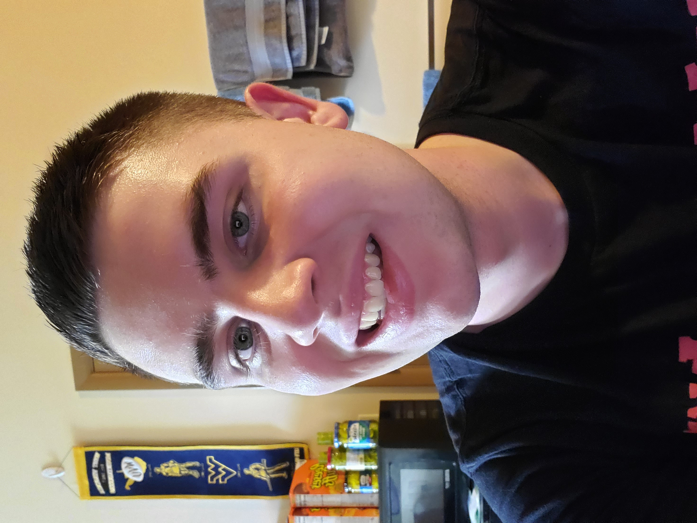

About Me
Hello! My name is Kollin Labowski, and I am a computer programmer looking for a career that will allow me to challenge myself. I graduated from West Virginia University in August of 2022 with my B.S. in Computer Science degree with a concentration in Cybersecurity and a minor in Mathematics. I now have about 6 years of programming experience in languages such as (but not limited to) Java, C, and Python. I have a particular interest in the fields of Cybersecurity and Machine Learning, and it is my hope to soon apply these topics towards earning a PhD in Computer Science. Thank you for checking out my website! Please consider taking a look at the above links, or contact me using the "Contact me" button in the toolbar at the top.